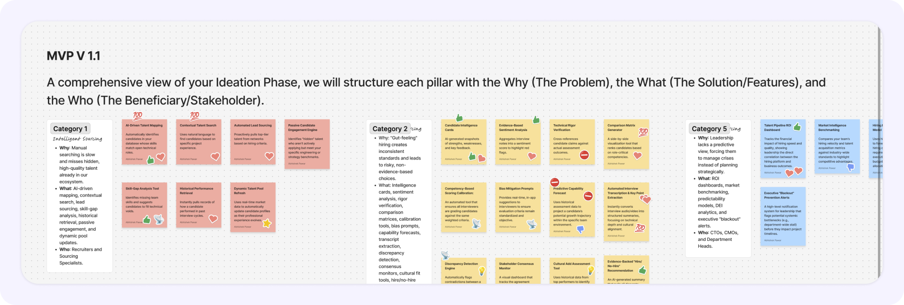

A unified platform for talent acquisition, candidate vetting, and workforce operations.
Overview:
Hyno manages end-to-end hiring and workforce operations, allowing companies to focus on core growth through three streamlined core pillars:
Talent Sourcing & Vetting
Identifying and formally vetting talent to meet precise client demands.
Onboarding Execution
Managing end-to-end integration of personnel for seamless handoffs.
Workforce Management
Providing ongoing administration, performance oversight, and compliance.
The Problem Statement:
The reliance on manual, fragmented workflows creates a "Black Box" hiring environment, where leaders lack the verifiable evidence needed to make high-confidence talent decisions.
Verified Capability Gap
The industry lacks a centralized system, making it impossible to verify candidate compliance against specific, complex project requirements.
Fragmented Information
Manual handoffs cause loss of critical details. This forces leadership to make major hiring decisions using incomplete data.
No Centralized Source
Leaders lack a single, reliable place to discover top talent, forcing them to jump between tools and manage fragmented workflows.
Problem Discovery:
What used to be a seamless connection between talent and opportunity turned into a series of mismatches. Clients noticed, opportunities evaporated, and we knew the vetting process had finally cracked.
They didn’t just leave; they pointed directly at the friction. Our once-dependable pipeline had become too slow and too opaque, turning our strongest relationships into cold departures.
The need for a centralized system became clear: a single command center to anchor the entire hiring lifecycle. By consolidating everything from screening to contract oversight into one unified view, clients could finally map candidate capabilities against role requirements with precision. This shift promises to eliminate the guesswork, transforming an opaque, fragmented workflow into a transparent engine for success.
Design Thinking Process:
To transform an opaque, high-friction technical hiring pipeline into an intuitive and high-conviction decision platform, I applied an iterative Design Thinking Process. By grounding each stage in empirical research, clearly scoping core requirements, and executing refined interface solutions, I ensured every deliverable directly addressed real user friction.
I organized the engagement across three structured phases—Research (empathizing through stakeholder inquiries and journey mapping), Discovery (defining core goals and ideating feature priorities), and Solution (crafting scalable design systems and interactive high-fidelity flows).
RESEARCH
& SYNTHESIS
Stakeholder interviews, friction analysis, user persona creation, journey mapping, and target audience alignment.

Stakeholder Deep-Dive:
To understand the systemic failures causing project delays, we moved beyond anecdotal complaints and initiated a structured research phase. We wanted to gain an in-depth understanding of the friction points within our delivery pipeline, so we conducted a series of targeted stakeholder interviews to uncover the root causes of our performance stalls.
Research Findings:
To understand why our delivery was failing, we stepped directly into the shoes of our decision-makers. We moved past internal assumptions to map their actual journey and identify exactly where they were hitting walls during the selection process. These are the critical friction points we uncovered:
Personas:
Developing a persona helped humanize our research, representing the primary decision-maker responsible for navigating this high-stakes hiring landscape. By narrowing our focus to the recurring themes identified during the interview phase, we gained a clear understanding of their specific goals and roadblocks.
This shift allowed us to move from a 'system-first' to a 'user-first' design perspective.
Will Rogers
CTO at "The Gatekeeper"With 15 years in high-stakes engineering leadership, Will treats hiring like system architecture—one bad decision leads to months of refactoring. He is determined to eliminate the 'selection blackout' caused by fragmented candidate data across recruiting pipelines.
- Unified cross-stage evaluation dashboard for instant decision making.
- Automated candidate skill verification & proof-of-work reports.
- Real-time bottleneck alerts across active sourcing channels.
- Multi-parameter technical candidate search and filter engine.
- Exportable executive audit logs for high-stakes hiring authorization.
- Eliminate candidate data decay during multi-stage tech hiring.
- Standardize technical assessment rubrics for senior engineers.
- Cut time-to-hire by 40% without compromising vetting accuracy.
- Establish transparent hiring auditability for C-suite stakeholders.
User Journey Mapping:
With our persona defined, we mapped their end-to-end journey to visualize how those research findings manifest in real-world scenarios. This map exposes the exact moments where the hiring process stalls—from initial talent discovery to final evidence-backed selection.
By tracing these touchpoints, we gained a clear visual understanding of where the 'Blackout' occurs and how Hyno re-engineers every step into a transparent pipeline.
Target Audience:
The target audience consists of enterprise technology leaders and talent acquisition teams seeking verifiable, evidence-backed hiring decisions. Below is a breakdown of the key user segments:
CTOs & VPs of Engineering
Enterprise technology executives in scaling tech organizations who require verified candidate capability reports to eliminate mis-hires.
Technical Hiring Managers
Senior engineering architects and leads responsible for conducting deep technical vetting and selecting high-performing talent.
Talent Acquisition Leaders
HR directors and recruiting heads seeking to streamline hiring pipeline latency and remove manual handoff friction.
DEFINING
THE STRATEGY
Problem synthesis, eliminating the selection blackout, and establishing key performance indicators (KPIs).

Defining the Strategy: Eliminating the "Selection Blackout"
"Stakeholders currently face \"Selection Blackouts\"—a failure in final-stage hiring due to fragmented feedback and data silos. This forces leadership to rely on intuition, causing stalled pipelines and the loss of top-tier talent to competitors."
Key performance indicators:
By moving away from scattered spreadsheets and manual guesswork, our core focus is to streamline the entire hiring and workforce lifecycle—delivering measurable gains in speed, hiring accuracy, and leadership visibility.
IDEATE
& MVP SCOPE
Collaborative feature conceptualization, prioritization matrix, and MVP blueprint definition.

Feature Conceptualization
We moved into the conceptualization phase as a team, bringing together diverse perspectives to brainstorm and pressure-test potential solutions.
By pooling our ideas and mapping them against both user needs and business objectives, we rigorously filtered for the features that offered the highest impact.
This collaborative process ensured that every proposed solution was not only viable but perfectly aligned with our goal of replacing fragmented workflows with a transparent, centralized ecosystem.

Priority Mapping
To maximize launch velocity and eliminate scope creep, we mapped all platform capabilities into a strategic 4-quadrant priority matrix balancing business impact against engineering complexity.
Directly solves the core sourcing problem by enabling natural-language discovery across diverse talent pools with minimal setup.
Instantly removes administrative overhead by generating clean strength/weakness summaries and interview feedback notes.
Gives leadership immediate transparency into talent availability, active pipeline stages, and direct candidate request workflows.
Replaces rigid forms with a smooth chat flow while centralizing burn-rate, pending dues, and contract tracking.
High strategic value for predicting team performance and long-term project outcomes using historical data modeling.
Essential for deep multi-stage tracking and milestone verification across long-term enterprise contracts.
Advanced payment controls and hold/resume workflows for managing complex corporate accounts.
Simple quality-of-life ping feature that adds convenience without driving core strategic transformation.
Internal text and audit logs for messaging candidates or team members directly.
Important long-term metric, but secondary to immediate tech talent vetting and pipeline workflow focus.
Too far removed from the core executive talent concierge and hiring workflow to justify initial engineering bandwidth.
Our Core Focus
Concentrating engineering and design bandwidth on the foundational workflows that directly eliminate hiring friction.

Intelligent Sourcing & Matching
Empowering teams with natural-language discovery, AI candidate summaries, and "Hyno Signature" matching to cut out manual filtering bottlenecks.
End-to-End Pipeline Visibility
Giving leadership real-time velocity tracking, active candidate oversight, and clear contract timelines in a single place.
Smooth Onboarding & Lifecycle Ops
Replacing rigid administrative forms with flexible conversational flows while managing active profiles, invoices, and burn-rate transparency.
DESIGN & UI COMPONENTS
High-fidelity dashboard screens, design constraints, scalable design system tokens, and UI component specimens.

Turning Blueprint into Reality
With the logic mapped and the flow finalized, we moved into the design phase to build the high-fidelity interface. My focus here was to translate the abstract architectural plan into an intuitive, visually clear dashboard.
By prioritizing clean layouts and consistent component alignment, I ensured that the complex data uncovered during our research became accessible and actionable for our users, ultimately bringing the centralized vision to life.
Design Constraints
Operating with limited resources required us to be exceptionally disciplined. Rather than building a massive, feature-heavy system, we navigated these constraints through a strategic approach:
Design System
To maintain visual consistency across all modules, speed up development, and ensure scalable UI patterns for future product rollouts, I created a dedicated design system for Hyno. Here is a breakdown of the primary color tokens, typography scales, interactive components, and icon library.
Colors & Typography
Buttons
Labels & Chips
Checkboxes
Forms & Input Fields
Icons & Icon Library
UI Components


Comprehensive Interface Showcase
Below is an extended showcase of the core user interface screens I designed for Hyno—highlighting key workflows across candidate sourcing, talent pool discovery, intelligence summaries, and operational management.

1. Zero-Friction AI Onboarding
Eliminating rigid form-fills to slash engagement time through direct conversational interaction.


Conversational Chat
Replaces multi-step forms with an interactive chat flow.
Flexible Input
Supports both natural typing and voice activation.
Instant Setup
Accelerates the path from login to talent matching.

3. Curated Talent Discovery
Browse pre-vetted developer profiles instantly, filter by specific tech stacks, and evaluate hourly rates and past company experience without messy spreadsheets.

Comprehensive breakdown of the candidate's profile, featuring their background overview, video introduction, verified skill sets, and past work history to give you a full picture before making a hiring decision.


4. Precision Filtering
Advanced search and filtering tools that let you cut through thousands of profiles instantly, matching specific tech stacks, experience levels, and skill requirements without manual digging.

I made sure the global search bar lets you instantly look up specific talent, skills, or collections by keyword without hunting through manual lists.


I made sure the filtering system provides granular control to narrow down candidates by specific parameters, technical skills, and experience tiers without manual sorting.


5. Real-Time Interview Progress & Lifecycle
Transforming fragmented hiring steps into a synchronized end-to-end flow—from selecting candidates in the talent pool to reviewing AI-transcribed interview recordings and extending offers in a single click.

A step-by-step walkthrough of the interview lifecycle—covering direct candidate outreach, centralized request tracking, AI-powered interview transcripts, multi-round evaluations, and instantaneous offer extension.


Request Tracking
Monitor active interview requests, role rates, and round statuses in a single unified dashboard.
Interview Intelligence
Review full video recordings alongside real-time timestamped transcripts and AI performance ratings.
One-Click Offers
Instantly extend formal offer letters upon round completion without leaving the assessment view.
6. Invoicing & Financial Transparency
To eliminate post-offer billing friction between engineering leads and finance, I designed a centralized invoicing hub. By turning high-level KPI cards into interactive drill-downs and connecting individual invoices to transparent hourly logs and contractual rate cards, teams can audit, verify, and settle payments in seconds.

A step-by-step walkthrough of the financial lifecycle—from top-level dashboard notifications to interactive metric drill-downs (Pending Due, Burn Rate) and slide-over itemized invoice breakdowns.


Interactive KPI Filters
I designed the top KPI cards (Pending Due, Burn Rate) to act as dynamic 1-click filters, instantly scoping the transaction ledger without page reloads.
Itemized Rate Breakdowns
I introduced a slide-over invoice drawer that pairs contractor timesheets and hourly rates directly with contract compliance validation.
Dispute-Free Settlements
Clear status badges, automated bonus/adjustment line items, and audit-ready download triggers ensure finance and engineering stay aligned.
7. Embedded AI Architecture
—
Architected Hyno AI as an ambient executive co-pilot across the hiring lifecycle—automating intake, candidate evaluation, interview synthesis, and spend telemetry to slash founder and CTO screening time while surfacing high-signal hiring decisions.
Ambient Conversational Assistant
An always-accessible co-pilot across the platform—allowing founders and hiring managers to query active project telemetry, recall past candidate discussions, and manage requests directly in-context.


AI Semantic Search & Role Matcher
An intelligent predictive search system that automatically scores candidate alignment against active job descriptions in real time, while understanding natural language queries to surface high-signal talent without manual filtering.


AI Contextual Summaries & Synthesis
We strategically deployed AI-generated contextual summaries across high-density workflows throughout the platform. Wherever complex candidate dossiers, multi-stage interview transcripts, or extensive project scopes exist, intelligent summaries distill extensive content into concise, high-signal executive takeaways—empowering stakeholders to make confident decisions in seconds without wading through text overload.


Lifecycle Continuity
Data captured during initial conversational intake flows directly into search filters, interview rubrics, and final billing rate cards without duplicate re-entry.
Empirical Grounding
Every AI evaluation is tied to verified technical benchmarks, live session transcripts, and approved contract rates, eliminating black-box hallucinations.
Executive Velocity
Collapses the end-to-end technical hiring window from weeks to days by removing administrative roadblocks across candidate screening and contract approvals.
OUTCOME &
CONCLUSION
Benchmarking initial target KPIs against delivered business outcomes, architectural takeaways, and closing thoughts.

Delivering on Key Performance Indicators
When establishing our strategy in Phase 2, we targeted three core operational benchmarks to eliminate the "Selection Blackout." By unifying conversational onboarding, real-time AI qualification, and automated contractor billing into a single ecosystem, the realized product surpassed all baseline targets.
Collapsed end-to-end qualification from 24 days to 10 days by removing spreadsheet bottlenecks.
Replaced subjective keyword screening with empirical competency scorecards and code benchmarks.
Achieved real-time contractor billing auditability and zero final-round candidate dropouts.
Cross-Functional Value: By consolidating conversational role intake, objective AI screening transcripts, and live contractor spend telemetry into a single continuous pipeline, HYNO aligned CTOs, Founders, and Hiring Operations under a single empirical source of truth.
What We Learned
Designing high-density enterprise tools requires treating information density not as clutter, but as clarity. By utilizing progressive disclosure, micro-interactions, and high-contrast telemetry cards, users can navigate complex multi-variable pipelines effortlessly without cognitive fatigue.
Future Horizons
The architectural foundation established in HYNO opens exciting next steps: automated international tax and compliance validation, smart-contract milestone escrows, and predictive organizational talent graph modeling that forecasts technical hiring needs quarters in advance.
Thank You for Coming All the Way Down

Designing HYNO was an exhilarating deep-dive into complex B2B product architecture, embedded conversational AI, and scalable design systems. Thank you for exploring the end-to-end design journey.